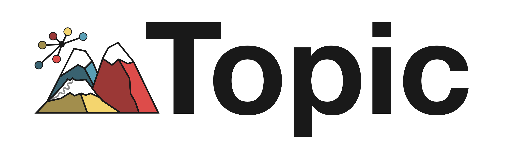

This is a wrapper of the mTopic Python library, dedicated to R users. The package provides seamless integration with Seurat object data. The API along with vignettes demonstrating how the method works can be found at https://TabakaLab.github.io/mTopicR.
Download the main Python package from the repository https://github.com/TabakaLab/mTopic. Remember to set your own package location for the mTopic_python_path variable. Don’t change env_name unless you have a very good reason to do so. For more details, read Notes about the virtual environment.
mTopic_python_path <- "/path/to/python/mtopic" # Change to your own path
env_name <- "mTopic_r_package" # Don't change this name unless necessary
if (!requireNamespace("reticulate", quietly = TRUE)) {
install.packages("reticulate")
}
if(!reticulate::condaenv_exists(env_name)){
reticulate::conda_create(
envname = env_name,
python_version = "3.11.2",
packages = c(
"openssl=3.2.0",
"libcurl=8.4",
"h5py",
"muon",
"matplotlib",
"anndata=0.10.8"
),
channel = "conda-forge"
)
reticulate::py_install(
packages = mTopic_python_path,
envname = env_name,
pip = TRUE
)
}After creating the virtual environment, install the package directly from the GitHub repository:
if (!requireNamespace("devtools", quietly = TRUE)) {
install.packages("devtools")
}
devtools::install_github("TabakaLab/mTopicR")mTopic_r_package. If for some reason the user wants the environment to have a different name, e.g., different-env-name, then loading the package instead of just library(mTopic) must be preceded by options('MTOPIC_ENV_NAME' = 'different-env-name'):Keep in mind that the above notes only apply to the scenario where the name of the mTopic virtual environment is changed. By default, the user loads the package as usual:
Please be aware that certain outputs from the R wrapper may differ slightly from those presented in the tutorials of the original Python package. This is primarily due to differences in how Python and R manage random state initialization, which can lead to differing results in random number generation, even when the same seed is applied. Discrepancies may also arise from employing different methods for selecting highly variable genes; the R wrapper utilizes Seurat’s FindVariableFeatures function, while the original Python implementation relies on the highly_variable_genes function from the Scanpy package. However, from a qualitative perspective, the results of the topic modeling remain consistent across both packages.